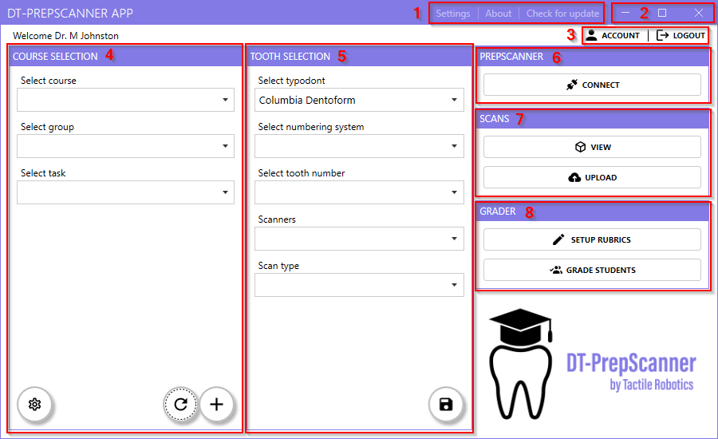

The PrepScanner™ App dashboard is designed to centralize all key functionalities
required for managing dental preparation tasks efficiently. The dashboard is divided
into eight key sections, each serving a specific purpose.
Figure 1. Main App Interface 
Key Dashboard Sections
1. Settings, About, and Updates
Provides access to application settings, general information about the app, and options to check for and install updates.
2. Window Controls
Standard controls to minimize, maximize, or close the app window.
3. Account and Logout
Displays the logged-in user's name and offers the option to log out of the application.
4. Course Selection
Allows instructors to select a course, group, and task to manage. This is essential for organizing tasks by course and group.
5. Tooth Selection
Facilitates the selection of a typodont, numbering system, tooth number, scanner, and scan type for scanning tasks.
6. PrepScanner
Enables connection to the scanning device for performing scans.
7. Scans
Allows users to view completed scans or upload new scans for grading and analysis.
8. Grader
Provides tools to set up grading rubrics and grade student submissions based
on the uploaded scans.
By understanding these sections, users can effectively navigate the dashboard and
utilize its features for streamlined dental preparation management.